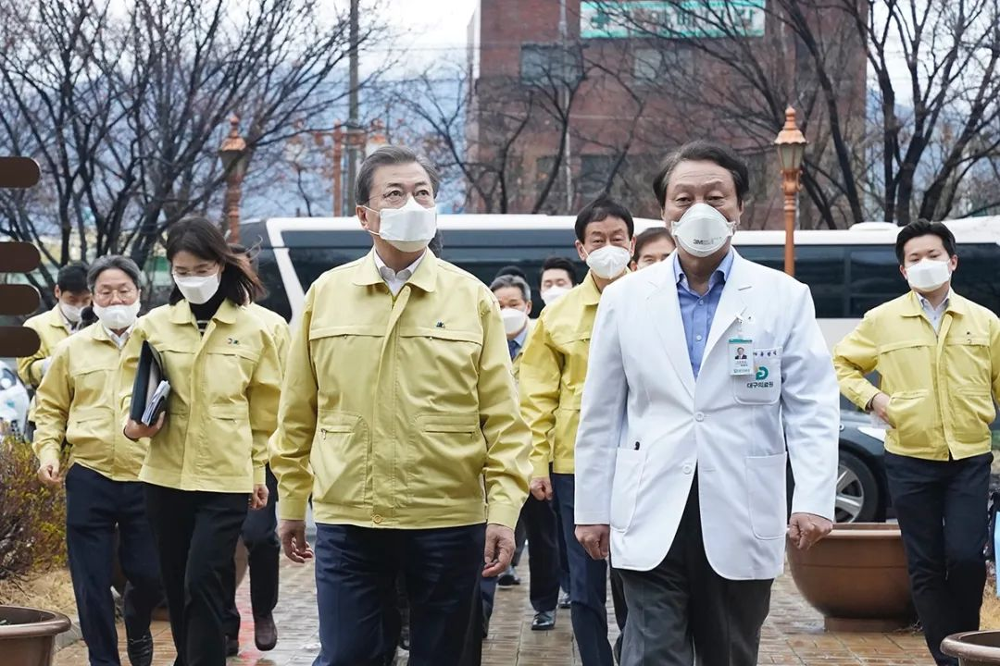

大邱紧张，大阪淡定 | 疫情双城记
原文链接 备份链接 澎湃新闻记者 于潇清 近日，韩国和日本新冠肺炎疫情防控形势日趋严峻，引起国际社会关注。 据韩国中央防疫对策本部2月28日最新通报，截至当天上午9点，韩国再新增新冠肺炎确诊病例256例，累计2022例，死亡病例达13例。 …
 “如果疫情长期扩散，我们的医疗体系会崩溃”
“如果疫情长期扩散，我们的医疗体系会崩溃”


2月25日，韩国总统文在寅（前排左一）到访大邱，称力争本周内控制局势，让拐点尽快到来。中新社发 青瓦台供图 摄
在韩国总统文在寅亲临一线考察四天后，韩国新冠疫情重灾区大邱市的确诊病例数量依然在快速增长。2月29日下午5时，韩国政府发布新冠疫情最新数据，全国确诊病例达3150例，其中大邱及其所属庆尚北道累计确诊2645例，占总感染人数的84%。
1月20日出现首个确诊病例后，韩国的新冠疫情一度较为稳定，至2月18日共31人确诊。但因18日开始“新天地教会”大邱教会爆发聚集性病例，韩国新冠病毒感染人数最近两周迅速上升，20日破百，26日破千。绝大多数病例与韩国第三大城市、拥有240万人口的大邱直接相关。
2月25日以来，韩国总理丁世均和保健福祉部长官朴淩厚一直坐镇大邱市政府，执行文在寅要求的“最大程度封锁”措施，防止疫情的社区传播。
文在寅2月25日访问大邱时要求，争取使疫情拐点“在本周之内到来”。但两天后，韩国中央防疫对策本部本部长郑银敬在记者会上表示，大邱地区的确诊病例近期仍将持续增加。现阶段，韩国防疫部门的重点是对访问过大邱或与“新天地教会”接触过的人进行居家隔离和检测。“在此过程中若早期发现病例，将有助于防止交叉感染。”郑银敬表示。
“如果疫情长期扩散，我们的医疗体系会崩溃”
“护士的防护服太厚、太重，只能穿很短时间，每隔两个小时就要换班。”2月27日，启明大学大邱东山医院人士在接受《中国新闻周刊》电话采访时，描述了当地医护救治新冠病毒肺炎患者的情况。
2015年5月，中东呼吸综合征（MERS）疫情在韩国爆发时，朴槿惠政府的医疗应对饱受批评。政府未公开MERS病例的收治医院名单，而“零号病人”先后四次自行转院治疗，直接、间接导致180余人感染，使韩国成为中东之外MERS疫情最严重的国家。
当年7月，韩国政府基于《公共卫生管理法》首次建立公共卫生信息公开制度。2016年寨卡病毒疫情爆发后，韩国政府首次援引公共卫生信息公开制度，公布了全部收治医院的名单。
据大邱市政府官网信息，在2020年2月18日“新天地教会”疫情爆发后，大邱市已指定并公布了15家医疗机构进行新冠病毒检测。市政府在官网上特别提及，疑似感染新冠肺炎的孕产妇可以到其中一家指定医院检测。
启明大学大邱东山医院（以下简称“大邱东山医院”）人士对《中国新闻周刊》介绍，大邱市目前的收治流程是：如果有市民出现疑似症状，会先前往上述指定检测机构进行病毒检测，检测约6小时可得出结果，呈阳性即移送政府指定的收治医院治疗。
大邱东山医院是全封闭管理的指定收治医院，不负责检测，只负责治疗轻症确诊患者。如果患者转为重症，则再移送到该医院的上级医院——启明大学东山医院（以下简称“东山医院”）治疗。
截至2月27日，大邱东山医院共收治了232名确诊轻症患者，东山医院则收治了10名左右的重症患者。
此前，韩国《中央日报》等媒体曾报道大邱有上百名患者因为床位不够，无法住院治疗。有大邱东山医院人士对《中国新闻周刊》坦言：“在有些医院，患者无法住院，目前是不可避免的。因为其他医院即使想腾出床位，也要先转移院内的非新冠肺炎患者，这需要手续和时间。”
在启用大邱东山医院后，床位不足的问题已解决。启明大学东山医院是大邱规模最大的大学医院，拥有120年的历史。2019年4月，东山医院搬迁到现址，原址则改为大邱东山医院。大邱东山医院人士介绍，因为该院原址规模很大，所以虽然医院现在只有200多个床位，却保留有大约1000个床位的空间和设施，如果物资和人员到位，随时可以恢复到收治上千名患者的状态。
“就算患者数量继续增加，从医院的病床数量、现有设施和空间大小来看，还是完全能容纳的。”该人士指出。
该人士同时指出，虽然不缺床位，但医院的医用口罩、手套和防护服一直处于紧缺状态。“从长期来看，由于患者数量一直在增长，再加上这些（口罩、手套、防护服）都是一次性消耗品，肯定还需要更多的上述医用物资。”他说。
据韩国媒体报道，在韩国另一处疫情比较严重的庆尚北道的清道大南医院，部分医护人员连防护服都没有，仅仅戴着口罩。此后，该医院出现聚集性疫情。
大邱出现聚集性疫情后，当地市民金基焕（音）经常收到当地政府发来的提醒短信，大致内容是：为防止感染新冠病毒，请市民注意个人卫生，勤洗手、戴口罩、少出门。
“可是，现在去药店、超市都买不到口罩了。”2月27日，金基焕对《中国新闻周刊》表示，“我家里只有4只口罩，但是每天还要上班，每天都用掉一个。我愁着去哪里买点口罩，政府说会再给我们提供一批口罩，现在我还在等。”
据韩国《中央日报》报道，韩国国内的防护口罩生产厂家有113家，每天最大产量是1300万个，但是此前大量口罩被运往了中国。
金基焕发现，之前“几百韩元到一千韩元”的普通口罩涨到了4000到5000韩元（约23到28元人民币），“但是也买不到”。在大邱的中国留学生阿白则观察到，她之前购买的防疫口罩在有些药店里已经从平常的2500韩元（约15元人民币）左右涨价到了6000韩元（约34元人民币）。
据韩联社报道，截至2月27日，大邱市有20余名医护人员感染新冠病毒，260余名医护人员被隔离。大邱东山医院对《中国新闻周刊》介绍，目前该院医护尚无被感染者，但其上级医院东山医院2月24日已有一名护士确诊。
更大的问题是医护人员数量不足。截至2月27日，大邱东山医院参与救治新冠肺炎患者的医护人员及其他员工共有246人，从韩国其他地区前来援助的医护人员有97人。该院人士对《中国新闻周刊》介绍，现在医院的护士们按工作两小时、休息两小时、再工作两小时的模式不断工作，“只有人员数量上去了，才有可能实现（换班）。”此外，处理医疗废弃物、打扫卫生的清洁人员也很急需。
此前，有参与救治工作的医生对韩国媒体透露，人手缺乏导致一线医护“很多人每天只能睡3个小时”。该医生说：“大家已经非常疲劳，再这样下去，不是因为感染上病毒，而是会因为体力不支倒下。”
2月27日，韩国医院协会发出警告，称大邱地区各医院防护物资不够、医护人员缺乏的问题严峻，甚至出现“普通患者因为当地无法救治而涌入首尔”的情况。“假如疫情长期扩散，各医院将难以承担这一压力，我们国家的医疗体系会崩溃。”
首尔大学医院院长金研修（音）建议，政府可以考虑仅安排指定医院收治20%的重症患者，而让80%左右的轻症的无症状感染者在医院之外的地方隔离治疗。
对此，文在寅于早前在工作会议中指出，将争取民间医疗机构和医务人员的合作参与抗疫。目前，已有200余名民间医生自发前往大邱等地支援抗疫。
大邱市市长权泳臻甚至呼吁中央政府“调派军医等前来协助”，韩国国防部长官郑景斗在2月28日回应，韩国军方的大邱医院正在建设转变为治疗新冠病毒患者的指定医院，目前韩国空军正投入兵力开展扩建工程。
现有的疫情防控体系已经被攻破
“若不能有效阻断社区传播，大邱疫情很可能扩散至全国。”韩国中央应急处置本部副本部长金刚立2月24日指出。次日，文在寅指示，要尽一切手段阻止病毒在这座韩国第三大城市传播。
当天，韩国政府决定对大邱市和庆尚北道采取“最大程度封锁”。青瓦台发言人康珉硕随后对媒体表示，该“封锁措施”是指尽快寻找并隔离接触病例的人员，阻断疫情扩散及社区传播，但并不禁止交通出入，所以并非所谓“封城”。
韩国共同民主党首席发言人洪翼杓表示，关于“最大程度的封锁政策”，政府还在商讨具体措施，可能会通过行政命令的方式尽可能减少人们的活动。
接受《中国新闻周刊》采访时，多位大邱市居民表示，截至2月28日，他们尚未收到相关行政命令，每日仍需照常上班。大邱市政府网站仅提示市民“自我克制减少出门”。
“封锁措施”实施后，大邱市关闭了部分公营机构，加强了街道消毒作业。据《纽约时报》报道，大邱市最大的市场西门市场经过一天的消毒后曾于2月24日重新开放。但三天后，西门市场再次关闭进行全面消毒，重新开放时间暂定为3月1日。
在大邱工作的中国人韩城告诉《中国新闻周刊》，他所在的公司也已经开始全面消毒，每天量体温，公司里摆放了很多消毒液。但市民金基焕说，他的居住地和单位都没有采取特别的防疫措施，小区和单位也还没有进行过消毒。
据韩国媒体报道，早在2月22日政府和学界共同探讨文在寅政府的“最大程度封锁”措施时，韩国流行病学学会人士就指出，考虑到防疫范围之外的患者人数骤增，仅通过追踪确诊患者来隔离接触者的防疫战略是不可行的。
“现在已经证实无症状患者也具有传染性，所以不能只对有症状的人进行隔离，这种做法是不可能防止进一步传染的。”2月28日，韩国首尔大学感染内科主任崔平俊（音）公开表示。同日，首尔市立西北医院院长朴灿炳（音）也向媒体表达对当前措施的质疑，认为现在大邱市很难做到追踪和封锁式防疫，可以说现有的疫情防控体系已经被攻破。
崔平俊还表示，如果文在寅政府现在开始全力采取“减少人与人之间的接触和人群聚集”等措施，疫情可以在两周内得到缓解，但是假如其他地区也出现大规模扩散，疫情还会持续更久。最糟糕的一种情况是疫情持续到今年年底，而韩国40%的人都会感染新冠肺炎。
采访中，阿白和韩城都提到，他们最近几天依然看到有人不戴口罩。“路人基本上90%都会戴口罩，但是偶尔还会看见那么几个不戴的。”阿白表示，“有的人在咖啡店里坐在一起距离很近，也不戴口罩。”
“他们就像不知道有新冠病毒一样。”韩城说。
（为保护受访者隐私，文中阿白、韩城为化名）
本作品著作权归中国新闻周刊独家所有，授权深圳市腾讯计算机系统有限公司独家享有信息网络传播权，任何第三方未经授权，不得转载。
值班编辑：冯超
推荐阅读
▼

封面报道
《新冠病毒——我们要付出多大代价》
《围城之战——我们如何过关》
《武汉攻坚——我们如何与疫情赛跑》
《防控之辨——我们怎样科学应对》
***点击下图，一键下单***

* *
*

原文链接 备份链接 澎湃新闻记者 于潇清 近日，韩国和日本新冠肺炎疫情防控形势日趋严峻，引起国际社会关注。 据韩国中央防疫对策本部2月28日最新通报，截至当天上午9点，韩国再新增新冠肺炎确诊病例256例，累计2022例，死亡病例达13例。 …
原文链接 备份链接 韩国1月20日发现首例确诊病例，此后一个月疫情发展缓慢，到2月18日确诊31例。2月19日后突然暴增，一周新增超过1200例。 18日确诊的第31号患者，被视为“超级传播者”。 韩国新冠疫情的一大特征是，在特定群 …
原文链接 备份链接 从1月13日中国境外出现首例新冠肺炎确诊病例，到2月末病毒登陆六个大洲，新冠疫情已经席卷了除南极洲外地球上的所有大洲。 截至3月2日，在中国以外，已有61个国家累计向世卫组织报告了8739例病例，其中已有127例死亡病 …
原文链接 备份链接 体坛周报全媒体驻意大利记者 王勤伯 （一） 保加利亚卢多戈雷茨欧联杯1/16决赛来米兰打客场，球员一路都戴着口罩，甚至在进入球场的时候也戴着，只有出场比赛没有戴。 空场比赛将是本周末意甲联赛的普遍景象。昨天发表在体坛 …
原文链接 备份链接 截至今天（2月28日）16时，韩国确诊新冠肺炎感染者的总数已经升至2337人，单日累计确诊新增571例感染者，再次刷新韩国出现新冠病毒以来单日新增确诊感染者人数最大值。 一位在韩国处于居家隔离期的中国留学生为《人物》 …